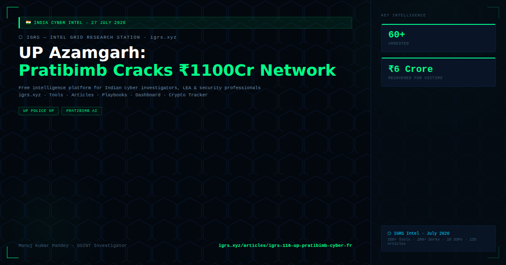

On 24 July 2026, Uttar Pradesh's Azamgarh district police announced a landmark cyber fraud operation powered by the Pratibimb App — I4C's AI-based criminal location mapping system. The operation identified a fraud network with over ₹11,000 crore in linked transactions, resulting in 60+ arrests and ₹6 crore recovered for victims.
Pratibimb (Sanskrit: reflection) is a module launched by India's Indian Cyber Crime Coordination Centre (I4C) under the Union Home Ministry. It maps the locations of cyber criminals and crime infrastructure on a real-time geographic map, providing jurisdictional officers visibility into criminal hotspots. As of 2025, Pratibimb-led operations nationwide have resulted in over 6,046 accused arrested, 17,185 criminal linkages established, and 36,296 cyber investigation assistance requests processed.
| Parameter | Detail |
|---|---|
| District | Azamgarh, Uttar Pradesh |
| Arrests | 60+ accused |
| Fraud value identified | ₹11,000+ crore (linked transactions) |
| Funds recovered | ₹6 crore returned to victims |
| Tool used | Pratibimb App (I4C/MHA) |
| Fraud methods | KYC fraud, ATM blockage scams, fake jobs, lottery, medical emergency, digital arrest, sextortion, nude video call extortion |
Key insight: Pratibimb's integration with mobile number records, banking data, and digital footprints allows investigators to identify suspects and trace their real-time locations — a force multiplier for state cyber cells with limited resources.
| Method | Modus Operandi |
|---|---|
| KYC Fraud | Fake calls from "bank" claiming KYC expiry — extract OTP and drain account |
| ATM Blockage Scam | Tell victim their ATM is blocked, guide them to "unblock" via fraudulent steps |
| Digital Arrest | Fake CBI/ED officer on WhatsApp video call — coerce money transfer |
| Sextortion | Nude video call trap → recorded → extortion demand |
| Lottery Scam | Fake winning notification → processing fee extraction |
| Fake Job | Part-time job offer → advance fee fraud |
For investigators: File complaints at cybercrime.gov.in or call 1930. Pratibimb-aided cases have a significantly higher conviction rate due to digital trail mapping. S.318 BNS (cheating) + S.66D IT Act (impersonation using computer) are primary sections.